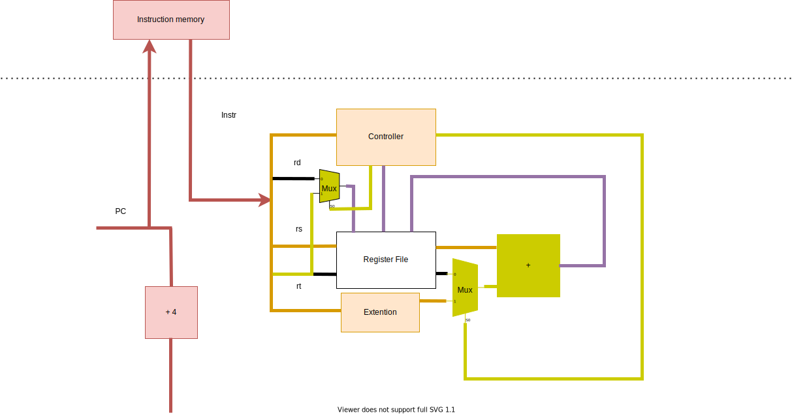
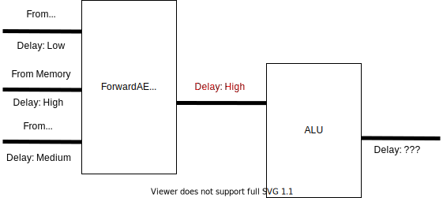

实验 1：五级流水线 MIPS CPU
先修内容：《深入学习计算机系统》Chapter 4: Pipelined Y86 CPU
1.1 MIPS 微体系结构
五级流水线，属于体系结构的范畴。不同指令集的 CPU，都可以有五级流水线的实现。
指令集是微体系结构的一部分，规范了指令编码等信息。
MIPS 属于精简指令集（Reduced Instruction Set Computing，RISC）。我们需要实现的 MIPS，部分基本信息如下：
- 每条指令长度为 4 字节（32 位）。
- 32 个通用寄存器，每个寄存器 32 位。0 号寄存器只读恒为 0。
- 内存读写的最小单位为 1 字节（8 位）。
1.1.1 MIPS 指令集
详见 MIPS 手册 Ⅱ： Volume II: MIPS32 Instruction Set。
这里介绍一下本实验中将要实现的部分指令：
01ae5821 addu t3,t5,t6
| [31:26]:000000 | [25:21]:01101 | [20:16]:01110 | [15:11]:01011 | [10:6]:00000 | [5:0]:100001 |
|---|---|---|---|---|---|
| 指令类型：寄存器类型 | rs: t5 | rt: t6 | rd: t3 | 全 0 | ADDU |
操作：Reg[rd] ← Reg[rs] + Reg[rt]
25290001 addiu t1,t1,1
| [31:26]:001001 | [25:21]:01001 | [21:16]:01001 | [15:0]:0000_0000_0000_0001 |
|---|---|---|---|
| 指令类型：ADDIU | rs: t1 | rt: t1 | 立即数 immediate |
操作：Reg[rt] = Reg[rs] + Sign_Extend(immediate)
注意：该指令中的 u 表示寄存器为无符号的，是为了忽略溢出（和 C 语言的 int、unsigned 加法语义一致），立即数仍需符号位扩展。有一部分指令的立即数是 0 扩展。
8d0c0000 lw t4,0(t0)
| [31:26]:100011 | [25:21]:01000 | [20:16]:01100 | [15:0]:0000_0000_0000_0000 |
|---|---|---|---|
| 指令类型：LW | base: t0 | rt: t4 | offset |
操作：
vaddr ← Reg[base] + Sign_Extend(offset)if (vaddr[1:0] != 2'b0) Exception(Address Exception)（本实验中，可以保证vaddr是 4 字节对齐）Reg[rt] ← LoadMemory(AddressTranslation(vaddr), size = WORD)
pc = bfc00704: 0ff00f00 jal bfc03c00 <n1_lui_test>
| [31:26]:000011 | [25:0]:11_1111_0000_0000_1111_0000_0000 |
|---|---|
| 指令类型：JAL（jump and link） | instr_index |
操作：
Reg[31] ← pc + 8- 执行下一条指令时：
pc ← {pc[31:28], instr_index, 2'b00}
JAL 指令常用于函数调用。
# note: in MIPS, branch-type instructions (including j, beq) have a delay slot.
sample1:
beq zero, zero, here # branch if equal
instruction1
instruction2
here:
instruction3
# sequence is: beq -> instruction1 -> instruction3
sample2:
bne zero, zero, there # branch if not equal
instruction 4
instruction 5
instruction 6
there:
instruction 7
# sequence is: bne -> instruction 4 -> instruction 5
本实验需要实现的指令：lui、addu、addiu、beq、bne、lw、or、slt、slti、sltiu、sll、sw、j、jal、jr、addisubu、sltu、and、andi、nor、ori、xor、xori、sra、srl、jalr
1.1.2 虚实地址转换
指令代码、寄存器中的地址都是虚拟地址。CPU 向内存请求时，需要提供物理地址。
本实验中，只要求实现简单的虚实地址转换。
typedef logic [31:0] paddr_t;
typedef logic [31:0] vaddr_t;
paddr_t paddr; // physical address
vaddr_t vaddr; // virtual address
assign paddr[27:0] = vaddr[27:0];
always_comb begin
unique case (vaddr[31:28])
4'h8: paddr[31:28] = 4'b0; // kseg0
4'h9: paddr[31:28] = 4'b1; // kseg0
4'ha: paddr[31:28] = 4'b0; // kseg1
4'hb: paddr[31:28] = 4'b1; // kseg1
default: paddr[31:28] = vaddr[31:28]; // useg, ksseg, kseg3
endcase
end
亦可以参考 RefCPU 中模块 AddressTranslator 的实现。
例如，当指令访问地址 0xbfc00380 时，实际访问的物理地址应该是 0x1fc00380。详见 MIPS 手册 Ⅲ： Volume III: MIPS32 Privileged Resource Architecture，第 29 页。
1.2 五级流水线
五级流水线的简单示意图如下：

虚线上方为内存部分的硬件，由测试文件提供。
写 CPU，就是实现 CPU 的内部，并用事先定好的接口进行封装。
1.2.1 Select PC
这一阶段在 Fetch Pipeline Register 前，选择流水线所执行的下一条指令的 PC。
可能的来源：
- 顺序的下一条指令（PC + 4）
- jump 类指令（
{pc[31:28], instr_index, 2'b00}）
等等。
1.2.2 Fetch
向 Instruction Memory 提供指令地址，并接收指令。
注意：本实验中，内存有 1 周期的固定延迟。
其行为类似于：
logic [127:0][31:0] memory;
logic [6:0] addr;
logic [31:0] data;
always_ff @(posedge clk) begin
data <= memory[addr];
end
可考虑把接受的数据直接接到下一流水段。
1.2.3 Decode
D 阶段完成：
- 指令解码，生成控制信号
- 从 Regfile（寄存器文件堆）中读取数据
- 判断是否跳转
1.2.4 Execute
E 阶段主要为 ALU。
1.2.5 Memory
M 阶段向 Data Memory 提供数据地址，并接收数据。
注意：本实验中，内存有 1 周期固定延迟。
1.2.6 Writeback
W 阶段向 Regfile 写数据。
1.2.7 Regfile
根据 MIPS 指令集架构，每条指令最多写 1 个通用寄存器，最多读 2 个通用寄存器。所以 Regfile 应设计为 1 个写端口，2 个读端口。
参考代码：
typedef logic[31:0] word_t;
typedef logic[4:0] creg_addr_t;
module regfile(
input logic clk,
input creg_addr_t ra1, ra2, wa3,
input logic write_enable,
input word_t wd3
output word_t rd1, rd2
);
word_t [31:1] regs, regs_nxt;
// write: sequential logic
always_ff @(posedge clk) begin
regs[31:1] <= regs_nxt[31:1];
end
for (genvar i = 1; i <= 31; i ++) begin
always_comb begin
regs_nxt[i[4:0]] = regs[i[4:0]];
if (wa3 == i[4:0] && write_enable) begin
regs_nxt[i[4:0]] = wd3;
end
end
end
// read: combinational logic
assign rd1 = (ra1 == 5'b0) ? '0 : regs[ra1]; // or regs_nxt[ra1] ?
assign rd2 = (ra2 == 5'b0) ? '0 : regs[ra2];
endmodule
1.2.8 Pipeline register
五级流水线中，会有阻塞与气泡，所以流水线寄存器需要提供这些机制。
参考代码：
typedef struct packed {
logic a;
} fetch_data_t;
module dreg (
input logic clk, resetn,
input fetch_data_t dataF_new,
input logic enable, flush,
output fetch_data_t dataF
);
always_ff @(posedge clk) begin
if (~resetn | flush) begin // flush overrides enable
dataF <= '0;
end else if (enable) begin
dataF <= dataF_new;
end
end
endmodule
Tips：
- W 阶段流水线寄存器不允许被阻塞。
- F 阶段流水线寄存器一般不清零；PC的复位值为
32'hbfc0_0000。 - M 阶段流水线寄存器阻塞时（因），E 阶段流水线寄存器通常也阻塞（果），防止丢失指令。
- E 阶段流水线寄存器阻塞时（因），M 阶段流水线寄存器通常清零（果），防止指令被执行多次。
1.2.9 Hazard and Forward
这个部分代码量可能不大，但应该是本实验中最复杂的部分。
主要难点是数据冲突。本实验中，仅需考虑写后读（RAW）冲突。请思考：
- 冲突阻塞部分：D 阶段取数据，E、M、W 阶段的写数据会造成冲突。哪些情况应当阻塞流水线？
- 转发部分：哪些指令写通用寄存器？电路图中的哪些数据线可作为转发来源？转发条件是什么？优先级是什么？
分支预测失败的情况比较简单。D 阶段判断分支是否跳转；由于 delay slot 的设计，F 阶段的指令一定执行。所以，分支跳转不会有额外的惩罚（数据冲突可能存在）。
1.2.10 封装 CPU
本实验的 CPU 的最顶层封装为 SRAM 接口。见 source/mycpu/mycpu_top.sv。
module mycpu_top (
input logic clk,
input logic resetn, // low active
input logic[5:0] ext_int, // interrupt, high active
output logic inst_sram_en, // 指令内存总使能
output logic[3:0] inst_sram_wen, // 字节写使能，本实验中为全 0
output logic[31:0] inst_sram_addr, // 地址
output logic[31:0] inst_sram_wdata, // 写数据
input logic[31:0] inst_sram_rdata, // 读数据
output logic data_sram_en, // 数据内存总使能
output logic[3:0] data_sram_wen, // 字节写使能，本实验中为全 0 或全 1
output logic[31:0] data_sram_addr, // 地址
output logic[31:0] data_sram_wdata, // 写数据
input logic[31:0] data_sram_rdata, // 读数据
//debug
output logic[31:0] debug_wb_pc, // W 阶段 PC
output logic[3:0] debug_wb_rf_wen, // 写使能，一般为全 0 或全 1
output logic[4:0] debug_wb_rf_wnum, // 写入的寄存器
output logic[31:0] debug_wb_rf_wdata // 写回的数据
);
// TODO: other circuit
endmodule
为了保证和后续实验在接口上的统一，我们在 CPU 内部统一使用 DBus 接口。在 source/mycpu/SRAMTop.sv 做了从 DBus 接口到类 SRAM 接口的转换。DBus 接口定义在 source/include/common.svh 中：
typedef struct packed {
logic valid; // 是否有请求？
addr_t addr; // 请求读写的地址
msize_t size; // 读写数据的大小：1、2 或者 4 字节，分别对应 MSIZE1、MSIZE2 和 MSIZE4
strobe_t strobe; // 4 位的字节写使能信号
word_t data; // 如果写使能不为全 0，这里放写入的数据
} dbus_req_t;
typedef struct packed {
logic addr_ok; // 内存是否已经接收了地址？
logic data_ok; // 内存是否完成了访存？
word_t data; // 请求地址处读出的数据
} dbus_resp_t;
对于本次实验，因为访存是固定延时，并且所有读写的数据以及指令访存都是 4 字节的，所以
dbus_resp_t中的addr_ok和data_ok信号实际上可以忽略。addr最低两位应该始终为 0，即地址与 4 字节对齐。size始终为MSIZE4。- 写操作时
strobe为4'b1111或4'hf。
你可能会注意到还有一个 IBus 接口。IBus 接口是 DBus 接口的子集，只保留了读取数据所需要的信号。此外，你的流水线部分的顶层模块文件应该是 source/mycpu/MyCore.sv。我们建议你将你的流水线分为多个模块来实现。你可以在 source/mycpu 这个目录下新建文件或者子目录。
你可以选择在模块 SRAMTop 中做地址翻译，或是在模块 MyCore 中做地址翻译。
1.2.11 连接 debug_* 信号
龙芯杯的测试会进行 trace 的比对。这需要从你的流水线中读取一些数据。我们在 1.2.10 一节中已经看到 mycpu_top 最后有四个 debug_* 信号了。为了避免增加下层模块的接口，我们建议你使用跨模块引用来连接这些 debug_* 信号。例如：
// in mycpu_top.sv
assign debug_wb_pc = top.core.writeback.pc;
assign debug_wb_rf_wen = top.core.writeback.aha ? 4'b1111 : 4'b0;
1.3 数据通路与译码控制信号
CPU 需要一系列硬件来执行指令所要求的功能。如果 CPU 只支持一条指令，那么 CPU 内所有的硬件都只为这一个功能所服务。随着指令条数的增加， CPU 设计者会添加一些硬件，同时也会复用一些原有的硬件。随着这些硬件复用性的提升， CPU 的数据通路会变得更复杂。Decode 阶段的译码器为这些硬件提供控制信号，这些控制信号也是高度复用的。
我们设计的第一条指令是 addu。只支持这一条指令的流水线，是比较简单的：

随后，我们加入了 addiu。Execute 阶段的加法器可以被复用，但源操作数不再是两个寄存器的值，而是一个寄存器和一个立即数；目的寄存器也不再是 rd， 而是 rt：

lw 指令通过一个加法器算出数据的虚拟地址，这个加法器可以使用已有的加法器。然而，写入寄存器的数据不再是加法器，而是数据内存：

添加了 jal 指令后，下一条指令的 PC 不再只可能是 (PC + 4)；写入的寄存器被指定为 31 号寄存器，数据则是指定为 (PC + 8)：

当 CPU 需要支持新的指令时，根据该指令的功能，设计数据通路，并视具体情形添加或复用硬件与控制信号。添加硬件，会增加 CPU 的电路面积；复用原有硬件，会增加复用器的电路复杂性，增加电路延迟。
添加新硬件时，需考虑将该硬件放在流水线的哪一阶段，避免影响该流水段的逻辑延迟。
1.4 *流水线性能评估
在本次实验中，我们实现了五级流水线 CPU。相对于单周期 CPU，流水线 CPU 牺牲了一些 IPC（流水线的数据冲突会阻塞流水线），换取频率的大幅提升。这一节主要分析流水线的性能。
1.4.1 高延迟的逻辑部件
在本实验设计的 CPU 中，有以下几个高延迟的逻辑部件：
寄存器文件：它的读逻辑和写逻辑都十分复杂。读过程的每一位是一个 32 选 1 的复用器，也就是 37 个变量的组合逻辑方程；读数据为 32 位，相当于上述逻辑复制 32 份。1 位寄存器的写逻辑比较简单，但 32 位的写入需要将该逻辑复制 32 次，电路就变得复杂了。
算术逻辑单元 ALU：本实验需要实现的算数操作中，加法、比较运算的电路是级联，移位运算的电路是复用器；整个 ALU 的输出还需要一次复用。
内存：本实验中不需要实现内存，但它在 CPU 的外部，数据传进来有很高的接线延迟。
1.4.2 用转发来减少阻塞
在流水线中，写后读冲突会导致流水线阻塞。
如果需要的寄存器数据，在流水线的其他阶段已经计算好了，可以进行转发。
然而，转发会导致该阶段延迟的增加。下图的转发会大幅度增加 E 阶段的延迟：

1.4.3 Pipeline as Mechanism
单周期 CPU 中，时钟频率是不可控的：为了支持新的指令，需要向数据通路中添加新的逻辑部件，导致延迟将越来越高。
流水线是拆分数据通路的一种机制，它将各个高延迟的逻辑部件划分在不同的流水段，使得电路延迟变得可控。五级流水线是一种策略。根据现有的数据通路和频率要求，设计更深或更浅的流水线。
1.5 发布包
用 Vivado 2019.2 打开 vivado/test1_naive/soc_sram_func/run_vivado/mycpu_prj1/mycpu.xpr，添加源文件后，即可开始仿真。
Tips：第一次仿真前，先点击 “IP Sources”，选中所有 IP 核源文件，右键，点击 “Generate Output Products”。几秒钟后，跳出 “OK”，然后再点仿真。
vivado/test1_naive/soft/obj/test.s 是测试的反汇编文件，有 PC、机器码、汇编码的对应。soft 目录下的其他文件里，可以找到测试的 C 代码。
source/mycpu/ 里已经有一些代码，其中：
mycpu_top.sv是顶层封装文件，仅需把 debug 信号连接上。SRAMTop.sv是 SRAM 接口封装文件，需要添加虚实地址翻译。MyCore.sv是 CPU 主体流水线文件。
你可以在该目录下随意添加源文件。在 Vivado 中执行 add_sources.tcl 后，它们都会添加到项目里。
source/include/ 里有一些头文件。
本次实验没有暂时没有使用 Verilator 进行仿真。我们会从实验 2 开始引入 Verilator，所以你需要确保你的在这次实验中编写的代码能够通过 Verilator 的编译。如果在使用 Verilator 中遇到了问题，请先阅读 Verilator 仿真寻找解决方案。
1.6 作业与提交
在 source/mycpu/ 里添加你的代码，实现五级流水线 MIPS CPU。
本实验需要实现的指令：lui、addu、addiu、beq、bne、lw、or、slt、slti、sltiu、sll、sw、j、jal、jr、addisubu、sltu、and、andi、nor、ori、xor、xori、sra、srl、jalr
PC的复位值为 32'hbfc0_0000。
1.6.1 通过标准
- 打开原有
mycpu.xpr，用source/mycpu/add_sources.tcl添加源文件，上板显示两个绿灯。 - 在仓库根目录打开终端，运行
make verilate TARGET=mycpu/VTop，确认 Verilator 能够编译你的 CPU 代码，并且没有报告任何错误和警告。
1.6.2 实验报告要求
- 格式：PDF
- 内容：按本文档 1.2 节的思路写即可。写好姓名学号。
1.6.3 提交文件格式
18307130024/
├── report/（报告所在目录）
└── source/（源文件所在目录）
用 zip -r 18307130024.zip 18307130024/ 打包。用 unzip 18307130024.zip 检查，应在当前目录下有学号目录。
1.6.4 评分
代码 80%，报告 20%。
Deadline：2021 年 3 月 21 日 23:59:59
1.7 *思考
- 流水线寄存器的 flush 信号，需要让所有信号都清零吗？
- 转发的成本是什么？有哪些限制？（板子上的组合逻辑基本部件为 LUT6，6 输入 1 输出，可实现 6 输入的任何给定逻辑式）
- 不同指令需要用到的流水线阶段可能不同：加法指令似乎不需要经过 Memory 阶段。能让它跳过 M 阶段吗？